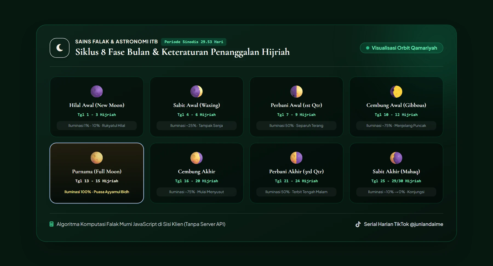

Edukasi Kalender Hijriah & Fase Bulan
Mengenalkan kembali ritme penanggalan Islam yang selaras dengan siklus orbit rembulan di langit dan jejak agung peristiwa sejarah umat manusia.
Padanan Masehi: · Penentuan tanggal 1 dapat disesuaikan hasil rukyat resmi
Kaitan Ibadah Syar'i:
Mengapa Kalender Hijriah Mengikuti Bulan?
Periode Sinodis (29.53 Hari): Waktu yang dibutuhkan Bulan untuk mengitari Bumi relatif terhadap Matahari dari satu fase konjungsi (Bulan Mati) ke konjungsi berikutnya adalah rata-rata 29 hari 12 jam 44 menit. Inilah mengapa umur bulan Hijriah hanya ada dua kemungkinan: 29 hari atau 30 hari.
Karakteristik Hari Ini:
Rahasia Ayyamul Bidh (Hari Putih): Tanggal 13, 14, dan 15 dinamakan Ayyamul Bidh (Hari-hari Putih) karena sepanjang malam langit bumi diterangi penuh oleh pantulan sinar matahari pada piringan bulan purnama.

Siklus Sinodis
29.53 Hari
Purnama Puncak
Tgl 14–15
Rukyatul Hilal
Tgl 29 Sore
Peristiwa Bersejarah:
Kalender Bulan
Klik salah satu tanggal untuk melihat fase bulan & catatan peristiwa sejarahnya
Edukasi 12 Nama Bulan Hijriah
Kalender Hijriah terdiri dari 12 bulan qamariyah, termasuk di dalamnya 4 Bulan Haram (Muharram, Rajab, Dzulqa'dah, Dzulhijjah) yang dimuliakan sejak zaman purba.
Ikuti Update Tanggal Hijriah Setiap Hari
Saya membagikan edukasi kalender Hijriah, makna hari, dan peristiwa sejarah setiap hari di akun TikTok sampai masyarakat semakin akrab dengan penanggalan Islam.